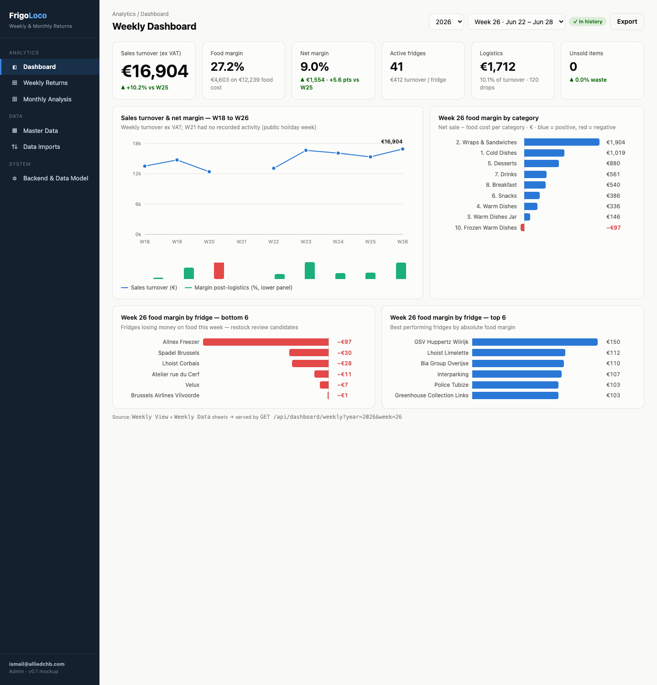
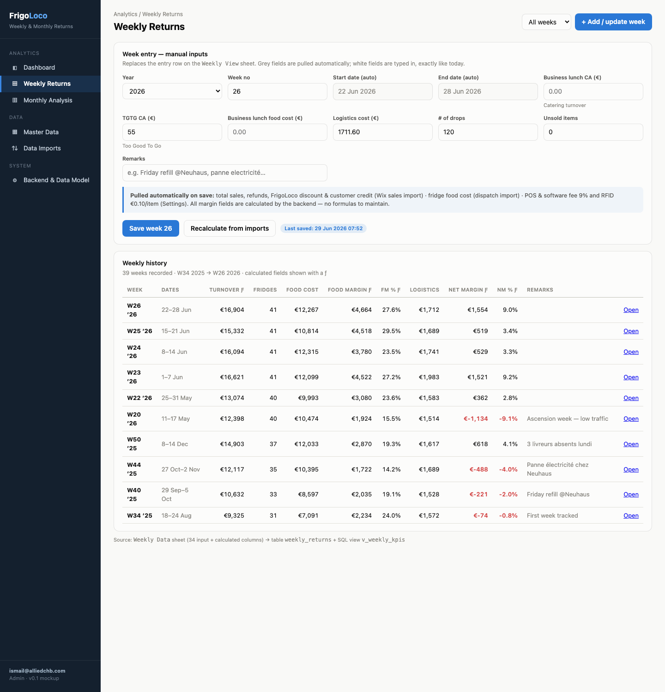
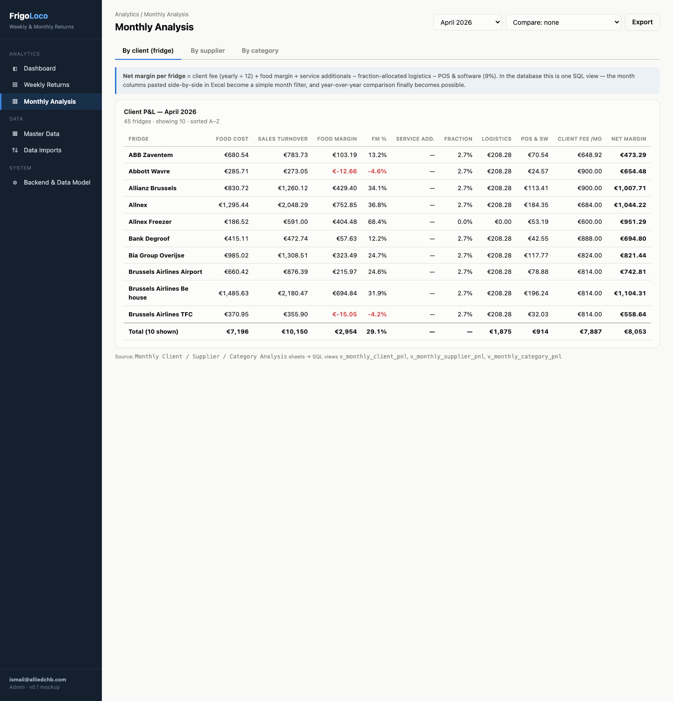
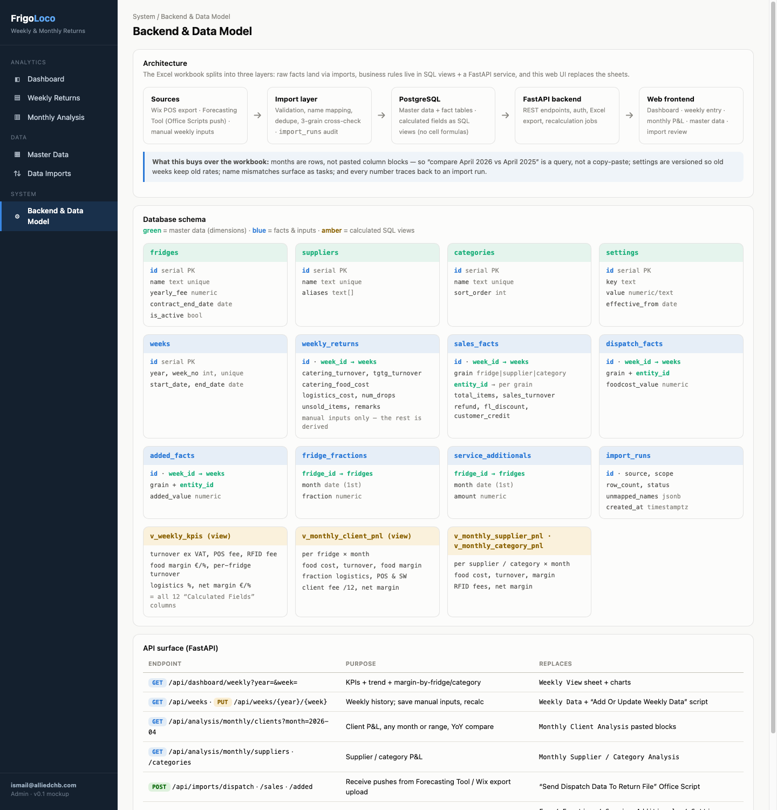

Modification History
| Date (UTC) | Description |
|---|---|
| 2026-07-02 08:20 PM UTC | Initial creation |
| 2026-07-02 08:55 PM UTC | Folded in binding guidance from FrigoLoco_Dev_Presentation_V5_Final.pptx: React (TypeScript) frontend fixed by platform stack (Trade-off B flipped, Change Log + Phase 4 rewritten), Railway hosting noted, role model added to Q5 context, audit trail (user + timestamp on every write) added to migration 0002 and PUT /api/weeks, module scope + Phase-4-of-5 placement documented in Background |
| 2026-07-02 08:34 PM UTC | AI review pass: updated renumbered sibling-spec references (DB/backfill spec 0001 → 0004; parent umbrella spec 0001), aligned cron layer with spec 0004's job pattern, renamed weekly_returns_refresh → weekly_completeness_check, fixed view/table counts and Mermaid contradiction, specified completeness_report table + discount_providers seed, enumerated manual-input fields; added open questions Q9–Q10 |
Summary
Port the "Weekly & Monthly Return V2.xlsx" workbook — FrigoLoco's weekly P&L and monthly client/supplier/category profitability tool — to a database-backed web application. The spec covers all four layers and how they link: the database layer (SQL views over the spec 0004 schema that replace every cell formula), the backend layer (FastAPI routers), the frontend (five screens, already mocked up in mockups/frigoloco-returns-app-mockup.html), and the cron layer (completeness checks and contract-expiry alerts following spec 0004's cron-job pattern). Sales and restock data already flow into PostgreSQL via spec 0004's Husky sync; this app reads those facts, accepts the operator's 8 manual weekly inputs, and computes every derived metric in SQL instead of Excel formulas.
Why
The Return workbook is the company's only view of weekly profitability and per-client/supplier/category P&L. It is hitting the structural limits of Excel:
- Months are pasted column blocks, not rows. The
Monthly Client Analysissheet holds 4 month-blocks of 10 columns pasted side-by-side (43 columns wide); adding a month means copy-pasting a block and re-pointing formulas. The sheet itself carries the notes "Can we go YoY?" and "How do we add extra months?" — year-over-year comparison is currently impossible. - Formula fragility corrupts the numbers. From week 43 (2025) onward the
Fridge Food Costcolumn silently stopped being populated, soFood Margin %reads 100% for weeks 43–49 andNet Margin %reads an impossible ~76–79%. A second bug: the net-margin formula subtracts the RFID rate (€0.10) instead of rate × items sold (~€250/week), overstating weekly net margin (verified against W34: −73.888 = margin − fees − 0.1). Nobody noticed either bug — there is no validation layer. - The plumbing is brittle. Dispatch costs travel Forecasting-workbook → Office Script → hardcoded Power Automate HTTP URL (embedded SAS key) → second Office Script → truncate-and-reload of a 16,884-row sheet in 500-row batches. Sales pulls hit the IntelligentFridges API with Basic-auth credentials hardcoded inside an Office Script.
- Name mismatches fail silently.
Sheet1is a scratch area of VLOOKUPs returning "Not Found"; the Sales Data supplier column contains category names ("2. Wraps & Sandwiches") and case-variant duplicates ("Colors kitchen" vs "Colors Kitchen", "Frozen Warm dishes" vs "10. Frozen Warm Dishes"). - Single-user, no audit trail. One person can edit at a time; there is no record of when a number changed or where it came from.
Spec 0004 already lands all the facts in PostgreSQL. Without this app, the team would still be doing analysis in the workbook, so none of those structural problems would actually go away.
Background & Context
Parent spec: 0001 — FrigoLoco: Excel to Cloud ERP Port (umbrella spec for the overall migration). The database/backfill spec referenced throughout this document is spec 0004 — Database Setup & Husky Historical Backfill (previously numbered 0001 before the specs folder was renumbered).
Guidance from the dev presentation (binding platform decisions)
FrigoLoco_Dev_Presentation_V5_Final.pptx (June 2026 dev briefing, v5) fixes several decisions this spec must follow rather than re-litigate:
| Decision (slide) | Consequence for this spec |
|---|---|
| Stack — React (TypeScript) frontend · FastAPI backend · PostgreSQL · Railway.com hosting · Azure Blob storage (slides 3, 16, 24) | The frontend is a React SPA, not server-rendered templates — Trade-off B is updated accordingly; the HTML mockup remains the visual contract. Deployment targets Railway. |
| Module map — this app is the "Finance & returns" module, one of 8 core modules (slide 3) | Scope boundary: forecast, menu, PO, stock, dispatch, routing and alerts live in sibling modules. This spec must not grow into them. |
| Delivery plan — Returns / P&L / consumption reports are Phase 4 "Reporting" of the 5-phase migration; "Excel stays live until each module is validated" (slide 15) | Confirms the parallel-run policy in Manual Steps as company policy, and sequences this app after Foundation (spec 0004) and alongside/after Dispatch (spec 0002). |
| Roles — Ops manager (full), Warehouse (read-only finance), Driver (dispatch only), Finance/reporting: read-only on returns and P&L, Admin (settings, master data) (slide 14) | Auth must be role-aware at least to the level of "ops can edit weeks / finance is read-only / admin edits settings" — reflected in Q5's context. |
| Audit trail — "Timestamp and user ID recorded on every dispatch save, stock change, and data entry. Non-negotiable." (slide 23) | Every weekly_summary upsert and master-data edit records user + timestamp; migration 0002 adds updated_by/updated_at to weekly_summary. |
| Client fees — the Client Management module tracks monthly fees per service type: fridge rental, coffee machine, fruit delivery, catering (slide 13) | The client-P&L view's yearly_fee/12 + service_additional inputs will eventually be fed per-service-type by that module; the view reads fee data through one place (fridge + service_additional) so the source can be swapped without touching the formula. |
The workbook being replaced
| Sheet(s) | Role | Destination in the new system |
|---|---|---|
Weekly View | Entry form (8 manual inputs) + week dashboard + 3 chart tables | Dashboard page + Weekly entry form |
Weekly Data | 39 rows (W34-2025 → W26-2026), 16 input + 12 calculated columns | weekly_summary table (spec 0004) + v_weekly_kpis view |
Monthly Client / Supplier / Category Analysis | P&L per fridge (45) / supplier (27) / category (10), pasted month blocks | v_monthly_client_pnl, v_monthly_supplier_pnl, v_monthly_category_pnl views |
Dispatch Data (16,886 rows), Sales Data (2,208), Added Data (1,949) | Fact staging at 3 grains × 2 periods each | Derived live from dispatch_line + purchase + restock tables — the 6-grain staging disappears |
Fee List, Fraction List (891 rows), Service Additionals, Settings, DV List | Master data | fridge, fridge_month_fraction, service_additional, app_setting (all spec 0004) |
Chart Data, Sheet1 | Chart staging / VLOOKUP scratch | Gone — charts read the API, lookups become FK joins |
Current data flow (from Office Scripts analysis)
flowchart TD
HUSKY["IntelligentFridges API<br/>purchases, restocks, facilities"]
FCAST["Forecasting workbook V5"]
S1["Office Script:<br/>Send Dispatch Data To Return File"]
PA["Power Automate HTTP flow<br/>hardcoded URL + SAS key"]
S2["Office Script:<br/>Update Return File Dispatch Data From PA"]
S3["Office Script:<br/>Add Or Update Weekly Data"]
RET["Return workbook V2<br/>15 sheets, cell formulas"]
OPS["Operator"]
FCAST --> S1
S1 -->|"6 aggregate maps: fridge, supplier, category x weekly, monthly"| PA
PA --> S2
S2 -->|"truncate-and-reload of Dispatch Data sheet"| RET
HUSKY -->|"sales + restock pulls, Basic auth hardcoded in script"| S3
OPS -->|"manual weekly inputs on Weekly View"| S3
S3 -->|"upsert WeeklySummaryDataTable + 12 sales and added tables"| RET
OPS -->|"copy-paste month column blocks for monthly analysis"| RET
Key facts from the scripts: the dispatch push prorates cross-month weeks by day-count; discount classification is driven by a FrigolocoDiscountProvider named range (providers in the list = FrigoLoco discount, all others = customer credit); monthly sales tables are recomputed by re-querying the API per calendar month.
What already exists (sibling specs)
- Spec 0004 — Database Setup & Husky Historical Backfill. Defines the PostgreSQL schema this app reads:
fridge(incl.yearly_fee_cents,contract_end_date),client,supplier,product,product_category,purchase(one row per RFID tag sold, withdiscount_provider),dispatch_line/dispatch_batch,weekly_summary(the manual weekly inputs, PK(iso_year, week_no)),fridge_month_fraction,service_additional,app_setting. It also delivers the historical backfill and the incremental Husky sync cron (sync_incremental). This spec creates no new fact tables — only views, two small operational tables (dispatch_weekly_aggfor the interim dispatch feed,completeness_reportfor cron results), API, UI and jobs on top. - Spec 0002 — Port Forecasting Tool to Web App. Will write dispatch batches directly to
dispatch_line, which removes the Power Automate hop entirely. Until it ships, dispatch data arrives via the interim path decided in open question Q4. - Frontend mockup.
mockups/frigoloco-returns-app-mockup.html— a working, data-populated mockup of all five screens (screenshots in the Proposed Solution section). It is the visual contract for the frontend phase.
Reference data points (used later for parity tests)
| Metric | Workbook value | Where |
|---|---|---|
| W26-2026 sales turnover ex VAT | €16,903.54 | Weekly Data row 43 |
| W26-2026 fridge count / net margin % | 41 / 9.02% | Weekly Data row 43 |
| April 2026 · ABB Zaventem net margin | €473.29 | Monthly Client Analysis block 4 |
| April 2026 · Croc&Go supplier net margin | €8,612.58 | Monthly Supplier Analysis |
| W26 food margin by category total | €4,603.34 (27.2%) | Weekly View row 33 |
Proposed Solution
One vertical slice on top of the spec 0004 foundation, in four layers. Business rules live once, in SQL views; the backend is a thin typed pass-through; the frontend renders what the API returns; cron guards data completeness rather than moving data (spec 0004's sync already does that).
flowchart TD
subgraph SRC["Data sources"]
HUSKY["IntelligentFridges API"]
DISP["Dispatch writes from Forecasting web app - spec 0002"]
OPS["Operator manual weekly inputs"]
end
subgraph CRON["Cron layer - spec 0004 job scaffold"]
SYNC["sync_incremental<br/>spec 0004, existing"]
WREF["weekly_completeness_check [NEW]"]
CEXP["contract_expiry_alert [NEW]"]
end
subgraph PG["PostgreSQL - spec 0004 schema"]
FACTS["purchase / dispatch_line / weekly_summary<br/>fridge / client / supplier / product_category<br/>fridge_month_fraction / service_additional / app_setting"]
VIEWS["v_weekly_sales / v_weekly_kpis / v_monthly_client_pnl<br/>v_monthly_supplier_pnl / v_monthly_category_pnl [NEW]"]
end
subgraph API["FastAPI backend [NEW]"]
ROUTES["routers: dashboard, weeks,<br/>analysis, master_data"]
end
UI["Web frontend [NEW]<br/>dashboard, weekly entry, monthly P and L,<br/>master data, import review"]
HUSKY --> SYNC
SYNC --> FACTS
DISP --> FACTS
WREF -->|"completeness checks on the closed week"| VIEWS
FACTS --> VIEWS
VIEWS --> ROUTES
FACTS --> ROUTES
OPS --> UI
UI -->|"JSON over HTTPS"| ROUTES
CEXP -.->|"renewal warnings"| UI
Layer 1 — Database (SQL views)
All 12 "Calculated Fields" columns of Weekly Data and all three monthly analysis sheets become five views in one Alembic migration — the v_weekly_sales helper aggregation plus four reporting views. "Client" P&L rows are at fridge (location) grain — e.g. "ABB Zaventem" — matching the workbook's Monthly Client Analysis sheet. Canonical formulas (verified cell-by-cell against the workbook):
| Metric | Formula | Source columns |
|---|---|---|
| Sales turnover (ex VAT) | (gross_sales + customer_credit − refunds) / (1 + vat_rate), flat 6% (Q2 may switch to per-line VAT) | purchase aggregated per ISO week |
| POS & software fee | pos_software_pct × gross_sales (9%, from app_setting) | purchase, app_setting |
| RFID fee | rfid_fee_cents × items_sold — corrects the Excel bug that subtracted the €0.10 rate itself (see Q3) | purchase count, app_setting |
| Food margin € / % | turnover − fridge_food_cost; % of turnover. Food cost = Σ dispatch_line.purchase_price_cents × quantity for the week | dispatch_line, dispatch_batch |
| Net margin € / % | food_margin + (catering_turnover − catering_food_cost) + tgtg_turnover − logistics_cost − pos_fee − rfid_fee | view + weekly_summary manual inputs |
| Client net margin (month) | yearly_fee/12 + food_margin_fridge + service_additional − fraction × logistics_month − pos_pct × sales_fridge | fridge, fridge_month_fraction, service_additional |
| Supplier / category net margin (month) | food_margin − rfid_fee(items) | purchase ⋈ product ⋈ supplier/product_category, dispatch_line |
| FrigoLoco discount vs customer credit | purchase.discount_provider ∈ discount_providers (from app_setting) → discount; otherwise credit | purchase, app_setting |
Layer 2 — Backend (FastAPI)
| Endpoint | Returns | Replaces |
|---|---|---|
GET /api/dashboard/weekly?year=&week= | KPI tiles + W-trend + margin-by-fridge/category | Weekly View sheet + Chart Data |
GET /api/weeks · GET/PUT /api/weeks/{year}/{week} | Weekly history; upsert the 8 manual inputs into weekly_summary | "Add Or Update Weekly Data" script (manual-input half) |
GET /api/analysis/monthly/clients|suppliers|categories?month=YYYY-MM | P&L rows for any month, optional compare= month | All three monthly analysis sheets |
GET/POST/PATCH /api/master/fridges|suppliers|categories|settings|fractions|service-additionals | Master-data CRUD | Fee/Fraction/Service Additionals/Settings sheets |
GET /api/export/monthly.xlsx?month= | Polars-generated Excel export | "COPY PASTE FOR AN EXPORT" workflow |
Every response body is a Pydantic model in backend/app/schemas/returns.py (e.g. WeeklyKpis, WeekManualInputs, ClientPnlRow) — no bare dicts cross the API boundary. Routers contain no arithmetic; they select from the views. Per the dev presentation's audit requirement (slide 23), every write endpoint stamps updated_by (authenticated user) and updated_at on the touched row — non-negotiable, enforced in returns_service, not left to the UI.
Layer 3 — Frontend (five screens, mockup is the contract)
A React (TypeScript) SPA in the frontend/ folder, per the stack fixed in the dev presentation (slides 3/16/24) — see Trade-off B and Q1. The mockup's CSS variables, layout and chart designs port into React components; the hand-rolled SVG line chart and diverging-bar renderers become LineChart/DivergingBars components rather than pulling in a chart library.




Layer 4 — Cron (following spec 0004's job pattern)
Jobs are standalone CLI entrypoints (python -m app.jobs.X) exactly like spec 0004's jobs. The scheduling mechanism — Railway cron entries (spec 0004's provisional choice) vs a single APScheduler worker — follows whatever spec 0004's open scheduling question decides; the job code is identical either way.
| Job | Schedule (Europe/Brussels) | What it does |
|---|---|---|
sync_incremental EXISTING | per spec 0004 | Keeps purchase/restock facts current — unchanged |
weekly_completeness_check NEW | Mon 06:30 | Completeness check for the closed week: purchases present, dispatch lines present, weekly_summary manual inputs entered. Results persist to completeness_report; missing items become dashboard warnings (and later notifications per Q8). |
contract_expiry_alert NEW | daily 07:00 | Flags fridges with contract_end_date within 60 days → "renewal due" badge on Master Data (already mocked). |
Risks
| Risk | Severity | Likelihood | Mitigation |
|---|---|---|---|
| View formulas diverge from workbook → wrong financial numbers trusted | High | Medium | Parity test fixtures pinned to known workbook values (Background table); 4-week parallel run before retiring the workbook |
| Known Excel bugs (RFID fee, W43+ food cost) make exact parity impossible for some weeks | Medium | High | Documented per-week tolerance list; Q3 decides whether history is recomputed correctly or replicated bug-for-bug |
| Spec 0002 slips → no dispatch feed → food cost stalls | Medium | Medium | Q4 interim path (retarget the existing PA flow to a small ingest endpoint) keeps data flowing regardless |
| Entity-name drift between Husky API and master data ("Colors kitchen") | Low | High | Spec 0004's name_mappings.py + alias columns; unmapped names surface on the Imports screen instead of failing silently |
Trade-off Analysis
A — Where do the derived metrics live?
One authoritative definition per metric, queryable from anywhere (API, psql, exports, future BI).
- No drift between API and ad-hoc queries
- Testable with plain SQL fixtures
- Zero refresh orchestration at this data volume
- Complex formulas are harder to unit-test than Python
Compute in FastAPI services with pandas/polars.
- Easier unit tests
- Metrics only exist behind the API — psql/BI see raw facts
- Re-implements aggregation SQL does better
Same SQL, precomputed.
- Fastest reads
- Staleness + refresh scheduling for a ~25k-row dataset that needs neither
Decision: plain SQL views. The dataset is tiny; correctness and single-source-of-truth beat micro-performance. Reconsider materialization only if a view exceeds ~500 ms under real load.
B — Frontend stack
The June 2026 dev briefing (slides 3/16/24) fixes React (TypeScript) as the platform frontend for all 8 modules; this module follows it so the ERP feels like one system.
- Consistent with spec 0002 and every future module
- Handles the interactive pieces well (dispatch-matrix-style grids elsewhere in the platform)
- Mockup CSS variables and chart designs port into components
- Node build toolchain to maintain
- Slower first screen than server-rendered templates
Server-rendered pages; the mockup's CSS/JS would port almost verbatim with no build toolchain.
- Simplest for a 1–3 user internal tool in isolation
- Diverges from the platform stack decision — this module would be the odd one out
- Rich interactivity is more work later
Serve the mockup file as-is and wire fetch calls into it.
- Fastest demo
- One 1,300-line file; no auth injection or routing — becomes the SPA nobody designed
Decision: React (TypeScript), because the dev presentation fixes the platform stack and cross-module consistency outweighs this module's standalone simplicity argument. Q1 remains open only to confirm alignment with whatever scaffold spec 0002 establishes (shared component library, router layout) so the two apps don't drift.
C — Source for weekly sales aggregates
purchase rowsGROUP BY over the tag-level facts spec 0004 already syncs.
- Exact daily attribution — cross-month weeks need no day-count proration for sales
- Any new grain (product, hour-of-day) is a query away
- Three-grain consistency is guaranteed by construction
- Historic parity must tolerate small rounding diffs vs Excel's prorated monthly numbers
Replicate the Sales/Added/Dispatch Data staging sheets as DB tables.
- Bit-exact historical parity
- Carries the workbook's redundancy (3 grains stored separately) and its proration approximation forward forever
Decision: aggregate from line level. Monthly numbers become more accurate than Excel (exact date attribution instead of day-count proration of week totals) — this is a deliberate, documented improvement, with tolerance thresholds in the parity tests (and Q8 confirms the policy).
D — Dispatch feed until spec 0002 ships
POST /api/imports/dispatch accepts the exact DispatchMapsResponse JSON the Power Automate flow already sends, writing weekly fridge-grain food cost.
- One URL change in the PA flow — zero changes to the Forecasting workbook
- Decouples this app's launch from spec 0002's timeline
- Temporary endpoint to delete later
- Aggregate-grain (not line-level) until 0002 lands
No interim plumbing; dispatch arrives when the Forecasting app writes dispatch_line directly.
- No throwaway code
- Food margin is blind until 0002 ships — the app can't launch independently
Decision: ship the interim endpoint; delete it in a follow-up once spec 0002 writes dispatch_line directly.
Change Log
All paths relative to the repo root scaffolded by spec 0004.
- backend
- alembic/versions
- 0002_returns_views.py5 views + dispatch_weekly_agg + completeness_report + discount_providers seed
- app
- main.pyinclude routers, CORS for the React dev server, serve the built SPA
- api
- __init__.py
- deps.pyDB session + auth deps
- dashboard.py
- weeks.py
- analysis.py
- master_data.py
- imports.pyinterim PA dispatch ingest (Q4)
- export.pyPolars .xlsx export
- schemas
- returns.pyall Pydantic response/request models
- services
- returns_service.pyweek upsert, completeness check, export assembly
- jobs
- returns_jobs.py2 CLI job entrypoints, registered per spec 0004's scheduling mechanism
- tests
- sql/test_views_parity.py
- api/test_dashboard.py
- api/test_weeks.py
- api/test_analysis.py
- api/test_imports.py
- pyproject.toml+ polars, xlsxwriter
- alembic/versions
- frontend
- package.json · vite.config.ts · index.html · src/main.tsxVite + React (TypeScript) scaffold — reuse spec 0002's scaffold if it lands first
- src/api
- returnsClient.tstyped fetch wrappers mirroring the Pydantic schemas
- src/components
- Sidebar.tsxshell from mockup
- charts/LineChart.tsxSVG line w/ gap handling + tooltips, from mockup
- charts/DivergingBars.tsxpos/neg margin bars, from mockup
- src/pages
- DashboardPage.tsx
- WeeklyReturnsPage.tsx
- MonthlyAnalysisPage.tsx
- MasterDataPage.tsx
- ImportsPage.tsx
- src/styles/theme.cssmockup CSS variables (light/dark)
| Category | Count | Notes |
|---|---|---|
| Files to create | ~30 | 17 backend (listed above) + ~13 frontend (React pages, components, client, scaffold) |
| Files to modify | 2 | app/main.py, pyproject.toml — cron registration lives in the deploy config (or spec 0004's scheduler module if its open scheduling question lands on APScheduler) |
| Files to delete | 0 | Workbook + Office Scripts are retired operationally (Manual Steps), not deleted from disk |
| Dependencies to add | 2 backend + frontend scaffold | polars, xlsxwriter (Polars' Excel engine); frontend: react, react-router-dom, typescript, vite (per the platform stack — no chart library, renderers are hand-rolled) |
Implementation Plan
- 1Phase 1 — Database views + parity harnessCreate the four SQL views and prove them against pinned workbook numbers before any app code exists.
- 2Phase 2 — Schemas + service layerPydantic models for every payload; week-upsert and completeness-check services.
- 3Phase 3 — API routersDashboard, weeks, analysis, master-data, interim dispatch ingest, Excel export.
- 4Phase 4 — FrontendPort the mockup into a React (TypeScript) SPA wired to the API.
- 5Phase 5 — Cron jobsCompleteness check + contract-expiry alert following spec 0004's job pattern.
- 6Phase 6 — Parity validation & cutover prepFull-history comparison against the workbook; document tolerated diffs; parallel-run checklist.
Phase 1 — Database views + parity harness
| # | Action | File | Detail & check |
|---|---|---|---|
| 1.1 | Create | backend/alembic/versions/0002_returns_views.py | Alembic migration creating v_weekly_sales (per-week aggregation of purchase: gross, refunds, discount-vs-credit split via app_setting.discount_providers, items sold), v_weekly_kpis, v_monthly_client_pnl, v_monthly_supplier_pnl, v_monthly_category_pnl, using the formula table in Proposed Solution verbatim. The same migration creates the two small operational tables dispatch_weekly_agg (interim ingest, Q4) and completeness_report (iso_year, week_no, purchases_present, dispatch_present, inputs_present, checked_at; PK (iso_year, week_no)), and seeds the app_setting key discount_providers with the FrigolocoDiscountProvider named-range values (spec 0004 does not seed this key). The migration also adds updated_by text / updated_at timestamptz columns to weekly_summary (audit requirement, dev presentation slide 23). Money stays in cents until the outermost SELECT. Downgrade drops all views, both tables, and the audit columns. Check: alembic upgrade head then SELECT count(*) FROM v_weekly_kpis succeeds. |
| 1.2 | Create | backend/tests/sql/test_views_parity.py | Pytest against the backfilled DB. Pins the Background reference values: W26-2026 turnover €16,903.54 (±€1), fridge count 41, April-2026 ABB Zaventem net €473.29 (±€1), Croc&Go April net €8,612.58 (±€5). Weeks 43–49 of 2025 asserted against recomputed values, not the corrupted workbook cells, with a comment block explaining each tolerated diff. Check: pytest tests/sql -x green. |
| 1.3 | Verify | — | Run an ad-hoc full-history diff (all 39 weeks: turnover, food margin, net margin) and save the CSV to the spec folder's reference-docs/. Check: every diff is explained by a known Excel bug or documented rounding tolerance. |
Phase 2 — Schemas + service layer
| # | Action | File | Detail & check |
|---|---|---|---|
| 2.1 | Create | backend/app/schemas/returns.py | Pydantic models: WeekManualInputs (the editable fields of weekly_summary: catering_turnover, catering_food_cost, tgtg_turnover, logistics_cost, drop_count, unsold_items, remarks, plus fridge_count if Q10 keeps it manual), WeeklyKpis (all view columns), WeeklyTrendPoint, MarginBarRow, DashboardResponse, ClientPnlRow, SupplierPnlRow, CategoryPnlRow, MonthlyPnlResponse, FridgeMaster, SettingItem, DispatchIngestPayload (mirrors the PA DispatchMapsResponse shape), CompletenessReport. All money fields Decimal euros in API payloads. Check: mypy app/schemas clean. |
| 2.2 | Create | backend/app/services/returns_service.py | upsert_week_inputs(session, year, week, inputs: WeekManualInputs) -> WeeklyKpis (writes weekly_summary, re-reads the view), get_completeness(session, year, week) -> CompletenessReport (purchases > 0, dispatch lines > 0, manual inputs non-null), build_monthly_export(session, month) -> BytesIO via Polars write_excel. Check: unit tests in 3.x cover each function. |
Phase 3 — API routers
| # | Action | File | Detail & check |
|---|---|---|---|
| 3.1 | Create | backend/app/api/deps.py, __init__.py | Session dependency (reuse spec 0004 db.py), auth dependency (mechanism per Q5) that yields the authenticated username — required for updated_by audit stamping (dev presentation slide 23). Check: unauthenticated request → 401. |
| 3.2 | Create | backend/app/api/dashboard.py | GET /api/dashboard/weekly: KPIs for the selected week, 9-week trend, margin-by-category, top/bottom-6 margin-by-fridge, completeness warnings. Check: test_dashboard.py asserts W26 fixture values. |
| 3.3 | Create | backend/app/api/weeks.py | GET /api/weeks (history list), GET/PUT /api/weeks/{year}/{week} (PUT body = WeekManualInputs, calls upsert_week_inputs; unknown year/week pair → 404, week without Husky data → 409 with the completeness report). Every successful PUT stamps updated_by/updated_at on the row (audit, slide 23). Check: test_weeks.py covers PUT-then-GET round-trip, both error paths, and the audit stamp. |
| 3.4 | Create | backend/app/api/analysis.py | GET /api/analysis/monthly/{dimension}?month=YYYY-MM&compare=YYYY-MM, dimension ∈ clients|suppliers|categories; response includes totals row; compare month returns side-by-side values. Check: test_analysis.py pins April-2026 client rows. |
| 3.5 | Create | backend/app/api/master_data.py | CRUD for fridges (fee, contract date), fractions, service additionals, suppliers, categories, settings. PATCH only touches provided fields. For rate-like app_setting keys (pos_software_pct, rfid_fee_cents) the write behavior — overwrite the single value vs effective-dated history — is decided by Q9; spec 0004's app_setting is a plain key/value table with no versioning. Check: CRUD round-trip test. |
| 3.6 | Create | backend/app/api/imports.py | POST /api/imports/dispatch accepting DispatchIngestPayload (the PA JSON verbatim); writes weekly fridge-grain rows into a lightweight dispatch_weekly_agg table created in the same migration as the views (used by the views via COALESCE with line-level data — line-level wins when present). Logs an import_run-style audit row. Marked clearly as interim (Q4). Check: test_imports.py posts a captured PA payload and sees food cost appear in v_weekly_kpis. |
| 3.7 | Create/Modify | backend/app/api/export.py, backend/app/main.py, backend/pyproject.toml | Export endpoint; register all routers; add deps. Check: GET /api/export/monthly.xlsx?month=2026-04 downloads a workbook whose totals match the API response. |
Phase 4 — Frontend
| # | Action | File | Detail & check |
|---|---|---|---|
| 4.1 | Create | frontend/ scaffold, src/styles/theme.css, src/components/Sidebar.tsx | Vite + React (TypeScript) scaffold (reuse spec 0002's if it exists — same router layout and component conventions). Port the mockup's CSS variables, card/table/badge/form styles and sidebar shell. Check: npm run build succeeds; an empty routed page renders the sidebar identical to the mockup screenshot. |
| 4.2 | Create | src/api/returnsClient.ts, src/components/charts/LineChart.tsx, DivergingBars.tsx | Typed fetch client mirroring the Pydantic schemas (hand-written interfaces; OpenAPI codegen optional later). Port the mockup's SVG line chart (W21-style gap handling, hover tooltips) and diverging horizontal bars as props-driven components. Check: Storybook-less smoke render with W26 fixture data visually matches the mockup. |
| 4.3 | Create | src/pages/DashboardPage.tsx, WeeklyReturnsPage.tsx, MonthlyAnalysisPage.tsx | Dashboard (tiles + 3 charts + completeness warnings), Weekly (entry form calling PUT /api/weeks, history table), Monthly (3 tabs, month + compare selectors). Week/month selectors drive query params via the router. Check: manual walkthrough of each screen against the mockup. |
| 4.4 | Create/Modify | src/pages/MasterDataPage.tsx, ImportsPage.tsx, backend/app/main.py | Master-data tabs (fridges with renewal badges, suppliers, categories, settings) and Imports page (ingest audit rows, unmapped-name list from spec 0004's mapping table). main.py gains CORS for the dev server and serves the built SPA in production. Check: every sidebar item navigates; no dead buttons for shipped features (unshipped mockup elements are removed, not stubbed). |
Phase 5 — Cron jobs
| # | Action | File | Detail & check |
|---|---|---|---|
| 5.1 | Create | backend/app/jobs/returns_jobs.py | run_weekly_completeness_check() — Mon 06:30 Europe/Brussels: get_completeness for the closed week, persist the report to completeness_report (surfaced by the dashboard). run_contract_expiry_alert() — daily 07:00: flag fridges within 60 days of contract_end_date. Both callable as python -m app.jobs.returns_jobs <job-name>, matching spec 0004's job pattern. Check: unit test with a frozen clock. |
| 5.2 | Register | — (deploy config) | Register both jobs per spec 0004's scheduling mechanism: Railway cron entries invoking python -m app.jobs.returns_jobs <job-name> (spec 0004's provisional choice), or scheduler registration if its open scheduling question lands on an APScheduler worker — same logging/failure conventions as spec 0004's jobs either way. Check: both jobs run on schedule in the deployed environment and write their outputs. |
Phase 6 — Parity validation & cutover prep
| # | Action | File | Detail & check |
|---|---|---|---|
| 6.1 | Verify | — | Regenerate the full-history diff CSV (step 1.3) through the API this time; attach to reference-docs/. Check: API numbers == view numbers == documented expectations. |
| 6.2 | Create | reference-docs/cutover-checklist.md | Parallel-run checklist: who compares which numbers weekly, sign-off owner, retirement date for the workbook and PA flow (duration per Q6). Check: reviewed by the operator before the first parallel week. |
Testing & Verification
Automated tests
| Test file | Type | Covers |
|---|---|---|
tests/sql/test_views_parity.py | Integration (DB) | All five views vs pinned workbook values; RFID/W43+ bug tolerances documented in-code |
tests/api/test_dashboard.py | API | KPI payload, trend gap for empty weeks (W21-2026), top/bottom fridge selection |
tests/api/test_weeks.py | API | PUT→GET round-trip, 404 unknown week, 409 incomplete week, recalculated fields change after input edit |
tests/api/test_analysis.py | API | April-2026 client/supplier/category rows, totals row, compare-month payload |
tests/api/test_imports.py | API | PA payload ingest → food cost visible in views; malformed payload → 422; audit row written |
| service unit tests (inside the api test modules) | Unit | upsert_week_inputs, get_completeness, export byte-stream opens in openpyxl |
Manual verification
- Open the dashboard for W26-2026 → tiles read €16,904 turnover / 27.2% food margin / 9.0% net margin / 41 fridges (matches the mockup and workbook).
- Select W21-2026 → charts show a gap, not zeros interpolated as a line dip to the baseline.
- On Weekly Returns, edit W26 logistics cost by +€100, save → net margin drops by exactly €100; revert.
- Monthly Analysis, April 2026, clients tab → ABB Zaventem row matches the Background reference; switch compare to March 2026 → two value columns render.
- Fire the captured PA payload at
POST /api/imports/dispatch→ Imports page shows the run; dashboard food cost updates. - Master Data → Abbott Wavre shows the "renewal due" badge (contract ended 15 Dec 2025).
- Download the April-2026 export → totals match the on-screen table.
- Open the app on a phone-width window → tables scroll horizontally inside their cards; no page-level horizontal scroll.
Acceptance criteria
- [ ] All 39 historical weeks reproduce workbook turnover within ±€1 (excluding documented-bug weeks, which match recomputed values)
- [ ] The 8 manual inputs round-trip through the UI and recalculate every derived field without a page reload error
- [ ] Any month from January 2025 onward renders in Monthly Analysis with no copy-paste step
- [ ] Compare-month works across years (April 2026 vs April 2025) — the workbook's unanswerable "Can we go YoY?"
- [ ] Both cron jobs are registered per spec 0004's scheduling mechanism, run on schedule, and write their outputs
- [ ]
pytestsuite green;mypyclean on new modules
Manual Steps
Pre-implementation
| # | Step | Owner |
|---|---|---|
| 1 | Confirm spec 0004 is deployed with the historical backfill complete (all 39 weeks of purchase/dispatch_line/weekly_summary present) — this spec's parity tests cannot run without it | Ismail |
| 2 | Capture one real Power Automate dispatch payload (JSON) into reference-docs/ for the ingest fixture | Ismail |
| 3 | Answer the open questions in this spec (Q1–Q10), especially Q3 (historical RFID recompute) which changes the parity fixtures | Ismail / Mathieu |
Post-implementation
| # | Step | Owner |
|---|---|---|
| 1 | Retarget the Power Automate flow's HTTP action to POST /api/imports/dispatch (interim path, Q4) | Mathieu |
| 2 | Run the parallel-run period (duration per Q6): operator enters weekly inputs in both the workbook and the app; compare dashboards weekly against the cutover checklist | Operator |
| 3 | After sign-off: stop updating the workbook, disable the "Add Or Update Weekly Data" button flow, archive the workbook read-only, and delete the PA flow once spec 0002 writes dispatch directly | Mathieu / Ismail |